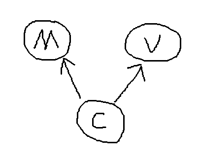

最近コードをリファクタリングしたいと考えています。プロジェクトを複数の学校で使用する必要があり、学校ごとにUIは異なりますが、機能はほぼ同一だからです。gradleのブランチを使えばコードの差異には対応できますが、共通部分のコードロジックも増え続けています。そこでリファクタリングしたいと思い、最近流行りのMVPパターンを調べてみたところ、非常に適していると感じました。ただ、ネット上の資料の多くはコピペの繰り返しで、誤りを含むものもあります。そこで、自分の理解に基づいてMVPパターンを説明し、他の人の理解に役立ててもらえればと思います。まず、皆さんが最もよく知っているMVCデザインパターンについて説明します。

MVCパターンはM層とV層の結合を疎結合にし、M層とV層はC層を通じて相互作用します。
次にMVPを見てみましょう。以下の文章でIで始まるものはインターフェースを意味します（図を手入力するのは本当に疲れます...）。
MVPとMVCの最大の違いは、P層が従来のC層の代わりを務め、制御対象が具体的な実装ではなくインターフェースになったことです。これにより、複数人での開発でも頻繁なUI変更でも、P層に影響は及びません。C層とV層のインターフェースが変わらなければ、UIの変更はV層の実装を変更するだけで済み、C層の実装を変更する必要もありません。そのためコードは非常に明確になり、ロジック層とビュー層が完全に分離されているのでテストも容易です。以下、コードで説明します。まずはMVCパターンから、ログインの例を使いましょう。AndroidはすでにC層とV層をうまく分離しており、私たちが書くXMLはV層に相当し、ActivityはC層に相当します。
public interface ICallback{
void receive(boolean success);
}
public class LoginModel{
public void login(String name,String password,ICallback callback){
WebApi.login(name,password,callback);
}
}
public class LoginActivity extends Activity{
private LoginModel mLoginModel;
private EditText mUserNameEt;
private EditText mPasswordEt;
private Button mSubmitBtn;
public void onCreate(......){
mLoginModel = new LoginModel(...);
mSubmitBtn.setOnClickListener(new OnClickListener(View view){
mLoginModel.login(mUserNameEt.get...,mPasswordEt.get...,new ICallback(){
public void receive(boolean success){
if(success){
startActivity(new Intent(this,MainActivity.class));
finish();
} else {
Toast.makeText(this,"登录失败",Toast.LENGTH_SHORT).show();
}
}
});
});
}
}
次に、MVPパターンではどう書くかを見てみましょう。記事の下のコメントで、ある方が契約クラス（Contractクラス）を書くと言っていました。調べてみたところ、契約クラスを書く方が便利なので、以下のコードは私が修正したものです。
public interface ILoginContract {
public interface ILoginModel{
public void login(String name,String password,ICallback callback);
}
public interface ILoginPresenter{
public void login(String name,String password);
}
public interface ILoginView{
public void showDialog();
public void dismissDialog();
public void showToast(String message);
public void navigateToMain();
}
}
public class PresenterImpl implements ILoginPresenter,ICallback{
private ILoginView mLoginView;
private ILoginModel mLoginModel;
public PresenterImpl(ILoginView loginView){
this.mLoginView = loginView;
this.mLoginModel = new LoginModelImpl();
}
public void login(String name,String password){
if(isEmpty(name)||isEmpty(password)){
this.mLoginView.showToast("用户名或密码不能为空");
return;
}
this.mLoginModel.login(name,password,this);
}
public void receive(boolean success){
if(success){
this.mLoginView.navigateToMain();
}else{
this.mLoginView.showToast("登录失败");
}
}
private boolean isEmpty(String text){
return text==null||"".equals(text)?true:false;
}
}
public class LoginActivity extends Activity implements ILoginView{
private IPresenter mPresenter;
private EditText mUserNameEt;
private EditText mPasswordEt;
private Button mSubmitBtn;
public void onCreate(......){
mPresenter = new PresenterImpl(this);
mSubmitBtn.setOnClickListener(new OnClickListener(View view){
mPresenter.login(mUserNameEt.getText().toString(),
mPasswordEt.getText().toString());
});
}
public void showDialog(){
//显示一个转圈的dialog;
}
public void dismissDialog(){
//隐藏转圈的dialog;
}
public void showToast(String message){
Toast.makeText(this,message,Toast.LENGTH_SHORT).show();
}
public void navigateToMain(){
startActivity(new Intent(this,MainActivity.class));
finish();
}
}
MVPのクラスとコードは確かに多くなりますが、それだけの価値は十分にあります。現在のコードロジックはMVCパターンで書くよりも明確であり、コードのテストもより簡単であることがわかります。ページのデザイン図がなく機能だけがある状態でも機能を完成させることができ、UIの変更もいかなるビジネスコードにも影響を与えません。
以上がMVPデザインパターンに関する私の個人的な理解です。もし誤りがあればご指摘ください。ありがとうございます。一緒に検討し、一緒に成長していきましょう。
投稿者：o动感超人o